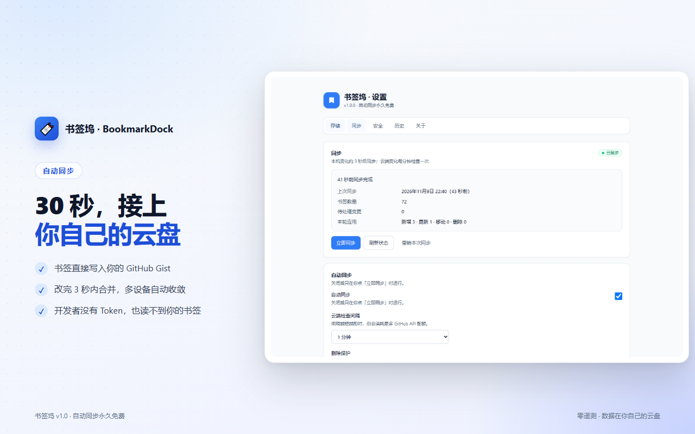
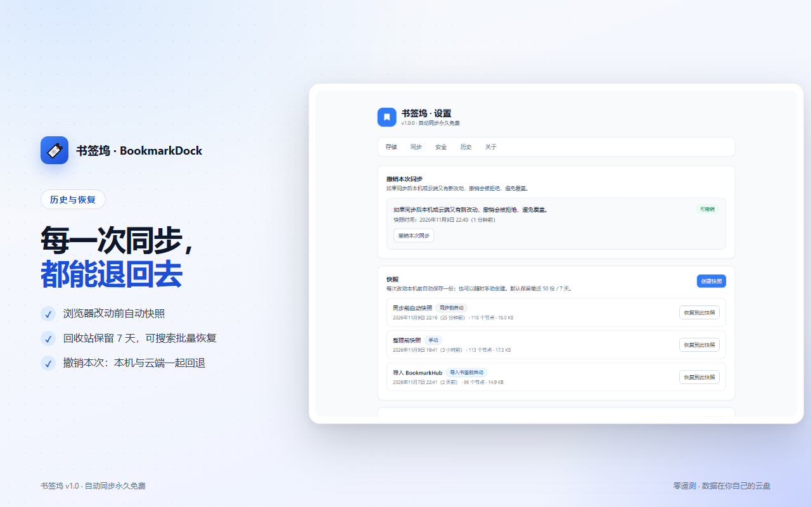
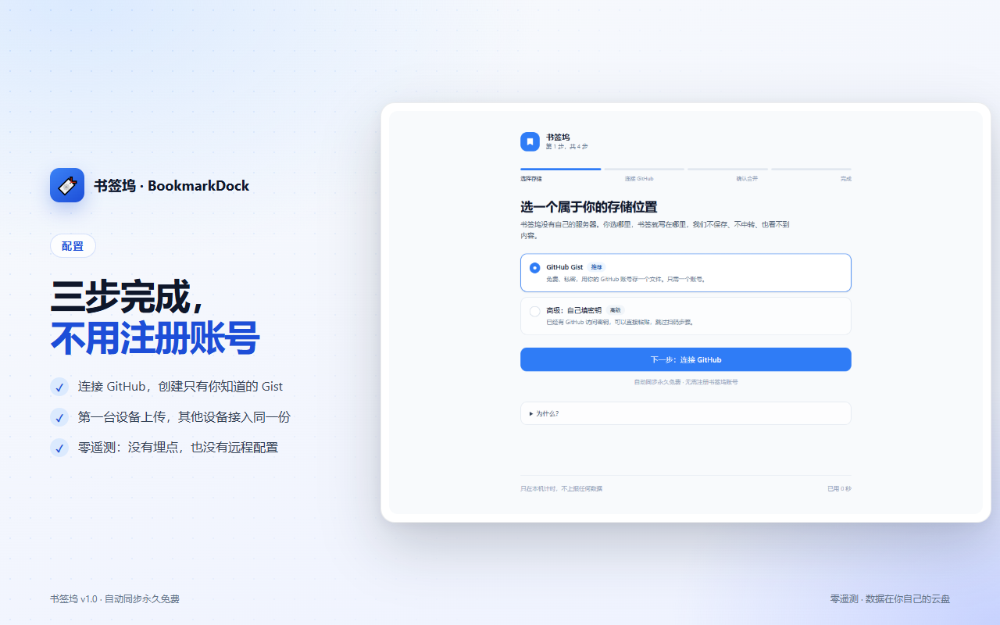
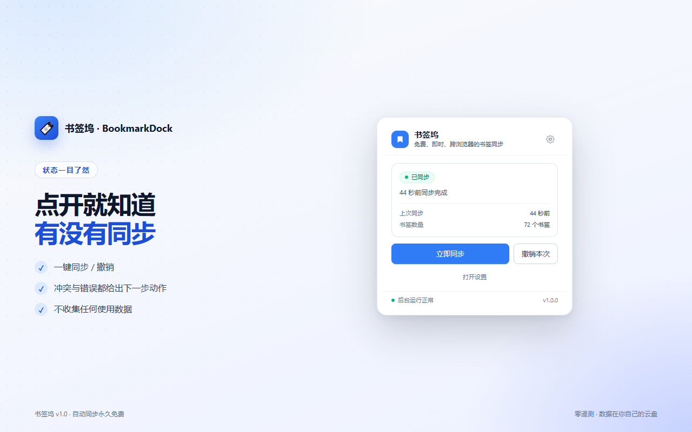

书签同步，本该免费
书签坞（BookmarkDock）把 Chrome、Edge、Firefox 的书签自动同步到 你自己的 GitHub Gist。没有账号体系，没有自建服务器，没有遥测； 可选端到端加密。
自动同步永不收费
改完书签约 3 秒内合并，多设备最终一致。核心同步不设会员墙。
数据在你自己手里
BYO 存储：书签直接写入你的 Gist，开发者没有 Token，也没有访问权。
零遥测
没有分析 SDK、没有埋点、没有“匿名统计”。网络请求清单公开。
不丢数据
删除熔断、7 天回收站、自动快照、一键撤销本次同步。
它是怎么工作的
-
连接 GitHub
点击「连接 GitHub」，在 GitHub 页面输入 8 位码，授权创建一个只有你知道的 Gist。
-
先预览，再合并
逐条比较本机与云端：两边都有时取最近修改的版本，只有一边有时补到另一边。
-
多设备自动收敛
其他设备授权同一个 GitHub 账号即可。本机改动约 3 秒合并，云端默认每 60 秒检查一次。
没有中间服务器：书签从你的浏览器直接写入你的 Gist。 书签坞不中转、不保存、也无法读取其中的内容。
主要功能
- 自动同步：本机书签变化约 3 秒内合并，默认每 60 秒检查远端（可调 30 秒–1 小时）。
- 确定性双向合并：多设备同时改也不打架，最终自动收敛。
- 冲突中心：只有真正无法自动合并的节点才需要你决定：保留本地、保留远端或两者都留。
- 删除熔断：一次删除超过 50 个或超过 10% 时先确认，避免误删扩散到所有设备。
- 历史与恢复：每次产生浏览器改动前自动保存快照，最多 50 份，默认保留 7 天。
- 一键撤销：把本机和云端一起退回上一次同步前。
- 回收站：删除的书签和文件夹保留 7 天，可搜索、批量恢复。
- 端到端加密：可选开启，云端只保存 AES-256-GCM 密文，密码只在本机内存。
- 导入迁移：支持 BookmarkHub JSON 和 Chrome / Edge / Firefox 导出的 HTML，先预览再合并，只增不改。
- 导出备份：随时导出 JSON 或浏览器可导入的 HTML。
界面预览




隐私与安全
- 不收集书签、网址或浏览历史：开发者没有你的 GitHub Token，也没有 Gist 的访问权限。
- 零遥测：没有分析、崩溃上报、A/B 测试或远程配置 SDK。
- 网络请求可枚举：只访问 GitHub（同步与授权）；v1.0 不启用付费闸门，正常使用不会触发其他请求。
- 可选端到端加密：AES-256-GCM + Argon2id，云端只能看到密文。
- 权限按需申请：不需要“读取所有网站”，不注入脚本，不读取页面内容。
常见问题
真的免费吗？
是。核心自动同步永久免费，不限制设备数量，也没有“高级同步”。 v1.0 全部功能免费，不校验 License。
需要注册书签坞账号吗？
不需要。你只需要一个 GitHub 账号，用来存放自己的 Gist。
书签到底存在哪里？
存在你 GitHub 账号下的一个 Gist 文件里。默认创建 secret gist； 开发者没有你的 Token，也没有该 Gist 的访问权。
支持 WebDAV、坚果云或 S3 吗？
v1.0 仅支持 GitHub Gist。后续版本会评估更多 BYO 存储，但当前版本没有这些入口。
忘记加密密码怎么办？
无法找回。密码只存在于本机内存，开发者也没有后门。 如果还有一台设备保留着明文同步状态，可以在那台设备重新同步； 否则云端密文无法解密。
第二台设备怎么加入？
安装扩展，连接同一个 GitHub 账号，确认预览结果后合并即可。 不需要手动复制文件或 Token。
卸载扩展会删除浏览器书签吗？
不会。卸载只会清除扩展自己的本地状态；浏览器书签和远端 Gist 都不受影响。